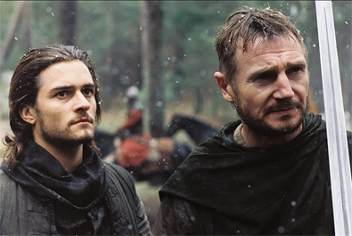
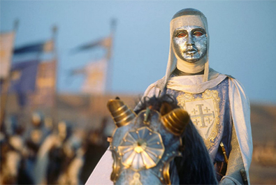
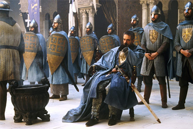
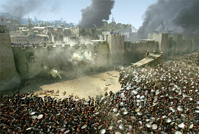
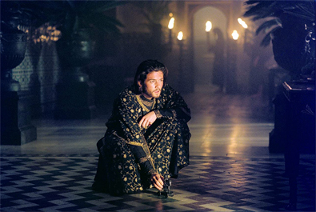
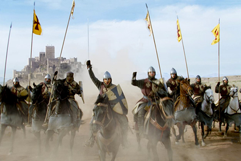

Ridley Scott
William Monahan
$218.1 million


Balian of Ibelin
Barisan of Ibelin ("Godfrey")
Raynald of Châtillon ("Reynald")
Young Sergeant
Raymond III of Tripoli ("Tiberias")
King Baldwin IV of Jerusalem
Saladin
Mullah
Gerard de Ridefort ("Templar Master")
Gravedigger
Firuz
Saladin's sister
Apprentice
Richard's Knight


The story is set during the Crusades of the 12th century. A French village blacksmith goes to the aid of the Kingdom of Jerusalem in its defence against the Ayyubid Muslim Sultan, Saladin, who is fighting to claim back the city from the Christians; this leads to the Battle of Hattin. The screenplay is a heavily fictionalised portrayal of the life of Balian of Ibelin (ca. 1143–93).
Filming took place in Ouarzazate, Morocco, where Scott had previously filmed Gladiator and Black Hawk Down, and in Spain, at the Loarre Castle (Huesca), Segovia, Ávila, Palma del Río, and Seville's Casa de Pilatos and Alcázar.
The visual style of Kingdom of Heaven emphasises set design and impressive cinematography in almost every scene. Cinematographer John Mathieson created many large, sweeping landscapes, where the cinematography, supporting performances, and battle sequences are meticulously mounted. The cinematography and scenes of set-pieces have been described as "ballets of light and colour", drawing comparisons to Akira Kurosawa. Director Ridley Scott's visual acumen was described as the main draw of Kingdom of Heaven, with the "stellar" and "stunning" cinematography and "jaw-dropping combat sequences" based on the production design of Arthur Max.
In the time since the film's release, scholars have offered analysis and criticisms through a lens situating Kingdom of Heaven within the context of contemporary international events and religious conflict, including broad post-9/11 politics, neo-colonialism, Orientalism, the Western perspective of the film and the detrimental handling of differences between Christianity and Islam.
On 23 December 2005, Scott released a director's cut, which received critical acclaim, with many reviewers calling it the definitive version of the film.

